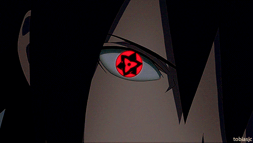

Pueden solicitar sus animes de cualquier genero o clasificación
Animes Largos:
más de 300 capitulos se considera anime de larga duración.
Animes Medio:
Mas de 100> capitulos pero menos de <=299.
Animes Cortos:
menor o igual de <=99, se considera anime corto.
No incluir cap de Ovas o Peliculas sobre las mismas!
En el mundo del anime existe un categoria especial llamadas Animes Épicos.
probando el formato em , por lo que veo cambia como el formato de la letra.
probando mark= No permitimos venta ni publicacion de animes Hentai jamás cualquier uso o distribucion de un proveedor será sancionado.
Animes de aventura.
Todo subtitulo grosero se verá asi, kelly pero que mondá y los gritos asi Nojoda!
tambien puedes subscrirte a nuestro canal de youtube.
Anime*Anime = Anime 2 .
Buscar animes con sus acrónimos ejemplo: SNK Ataque de titanes.
Probando formatos
Creado por Daniel Uchiha.palabras de derecha a izquierda.
RECONOCERcita del sitio website:
La variante esdrújula ánime es más reciente, pero no parece aconsejable añadir una grafía más, teniendo en cuenta que el japonés no tiene un acento de intensidad como el español y en propiedad la forma original no es ni aguda ni llana ni esdrújula (por ello, depende en gran medida de la apreciación subjetiva de cada persona, aunque en estos casos la tendencia es a percibir las voces como agudas o llanas).
- anime como se dice wikipedia
 El Sharingan ( 写輪眼, Sharingan, literalmente «Ojo Copiador Giratorio» ) Es uno de los tres grandes Dōjutsu junto al Byakugan y Rinnegan.
Es el Kekkei Genkai del clan Uchiha, que aparece de manera selectiva entre sus miembros. Una versión inferior del Rinne Sharingan de Kaguya Ōtsutsuki,
El Sharingan se manifestó primeramente en Indra Ōtsutsuki. el anime se manifestó por primera vez en Hagoromo Ōtsutsuki.
Bleach, Naruto, One-piece.

Frases de Madara Uchiha:
| Compañia | Contactos | Ciudad |
|---|---|---|
| Claro Colombia | 300838984 | Riohacha |
| Tigo Colombia | 300898989 | barranquilla |
| Emil | Tobias | Linus |
| windows | MAC | Linux |
| 16 | 14 | 10 |
tablilla